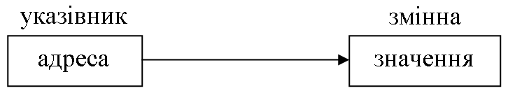
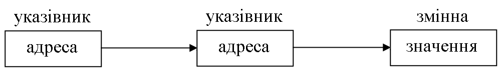

Теоретичні відомості#
Указівники#
Указівники є одним із найпотужніших засобів мови С. Сфера застосування вказівників досить широка, наприклад:
указівники дають можливість змінювати аргументи функцій, що знаходяться у викликах;
указівники можна використовувати для підтримки динамічного розміщення пам’яті;
указівниками можна заміняти масиви з метою підвищення ефективності роботи програми.
Указівник — це адреса елемента пам’яті, яка розподіляється для розміщення деякого об’єкта (як такий об’єкт може виступати змінна, масив, структура, рядкова константа). У випадку, якщо змінну оголошено як указівник, вона містить адресу байта пам’яті комп’ютера, за яким може знаходитися скалярна величина будь-якого типу. Під час оголошення змінної типу вказівник потрібно визначити тип об’єкта даних, адресу якого міститиме змінна, та ім’я вказівника. Загальний формат оголошення вказівника має такий вигляд:
специфікатор_типу* ім’я_змінної;
де
символ
*означає, що наступна за ним змінна є вказівником;специфікатор_типузадає тип об’єкта і може бути будь-яким із допустимих у мові С базових типів.
Змінна, яку оголошують як указівник на тип void, можна використати для посилання на об’єкт будь-якого типу. Проте, щоб можна було виконати арифметичні та логічні операції над указівниками або над об’єктами, на які вони вказують, потрібно під час виконання кожної операції явно визначати типи об’єктів. Такі визначення типів можна виконати за допомогою операцій перетворення типів.
Оператори для роботи зі вказівниками#
У мові C існує два оператори, які вживають зі вказівниками: * і &. Оператор & є унарним і повертає адресу комірки пам’яті свого операнда. Наприклад:
int var, *pvar; /*оголошено змінну цілого типу та вказівник на змінну цілого тіпа*/
pvar = &var; /*у змінну pvar поміщено адресу комірки пам'яті змінної var*/
Адреса &var вказує на місце розташування змінної var у пам’яті комп’ютера. Варто пам’ятати, що адреса змінної не має нічого спільного зі значенням змінної. Операцію & можна розглядати як оператор присвоювання, який присвоює змінній pvar адресу змінної var.
Інший спосіб занесення адреси в змінну-вказівник полягає в присвоєнні вказівнику значення відомої константи. Така потреба виникає в програмах, у яких заздалегідь відомі абсолютні адреси, що задають, наприклад, комірки з описом стану апаратних засобів (у програмах драйверів пристроїв, у яких для управління пристроями потрібно мати доступ до таких елементів пам’яті, як регістри стану чи комірка буфера пристроїв).
Оператор * є доповненням до оператора &. Це унарний оператор, який використовують для доступу до змінної (непряма адресація). За такого способу звернення до змінної відбувається не безпосередньо, а через проміжну змінну, яка містить адресу змінної. Наприклад, якщо pvar містить адресу комірки пам’яті змінної var, то виконання операцій
var = 150;
*pvar = 150;
призведе до однакового результату: змінна var набуде значення 150.
Вирази зі вказівниками#
До вказівників можна застосовувати операцію присвоювання. Указівнику на void можна присвоїти вказівник будь-якого типу. Проте для зворотного присвоювання потрібно використовувати явне перетворення вказівника:
void* pv;
float f, *pf;
pf = &f;
pv = pf;
pf = (float*) pv;
Над указівниками можна виконувати такі арифметичні операції:
Додавання (указівник + ціле) та віднімання (указівник – ціле):
p = p + n*sizeof(тип)
де
p— значення вказівника;n— деяке ціле. У загальному випадку додавання (віднімання) цілого числа до вказівника збільшує (зменшує) адресу, що міститься в ньому, на добуток цього цілого числа на розмір в байтах того об’єкта, на який цей указівник указує.
Віднімання (указівник – указівник). Якщо
р1ір2— указівники на елементи одного й того ж масиву, то операціяр1 - р2дає такий же результат, що й віднімання індексів відповідних елементів масивів.Приріст (збільшення або зменшення):
++,--. Указівник після кожного збільшення буде вказувати на наступний елемент базового типу. Це стосується як додатного, так і від’ємного приросту.
Інші арифметичні операції над указівниками заборонено, наприклад, не можна скласти два вказівника, помножити вказівник на число і т.п.
Указівники можна порівнювати: до них можливо застосувати всі 6 операцій порівняння: >, >=, <, <=, ==, !=.
Указівники та одновимірні масиви#
У мові С між указівниками й масивами існує тісний зв’язок. Наприклад, оголошення масиву int array[25] визначає не тільки виділення пам’яті для двадцяти п’яти елементів масиву, але й для вказівника з іменем array. Ім’я масиву без індексів трактується як адреса початкового елемента. Тобто ім’я масиву є вказівником на масив. Таким чином, доступ до елементів масиву здійснюється через указівник з іменем array.
Оскільки ім’я масиву є вказівником, допустиме таке присвоєння:
int arrаy[25];
int* ptr;
ptr = array;
У цьому фрагменті вказівник ptr установлюється на адресу першого елемента масива, при цьому присвоювання ptr = arrаy можна записати в еквівалентній формі ptr = &arrаy[0].
Звернення до, наприклад, п’ятого елемента масиву можна записати так:
array[4]
*(array + 4)
*(ptr + 4)
Усі ці оператори повернуть п’ятий елемент масиву. Таким чином, мова С дає два способи звернення до елемента масиву:
за допомогою індексованого імені;
за допомогою арифметики зі вказівниками.
Як приклад використання вказівника замість індексованого імені масиву розгляньмо наступні дві програми. У них для виведення на екран вмісту рядка застосовують два методи: звернення до індексованого імені елемента та звернення до елемента за допомогою вказівника.
Приклад 4.1#
/*версія з використанням індексованого імені*/
#include <stdio.h>
#include <ctype.h> // tolower
int main(void)
{
char str[80];
printf("Уведіть рядок із великих літер: ");
scanf("%s", str);
printf("Рядок із малих літер: ");
for(int i = 0; str[i]; i++)
printf("%c", tolower(str[i]));
}
Приклад 4.2#
/*версія з використанням указівника*/
#include <stdio.h>
#include <ctype.h> //tolower
int main(void)
{
char str[80], *p;
printf("Уведіть рядок із великих літер: ");
scanf("%s", str);
printf("Рядок із малих літер: ");
p = str; /* одержуємо адресу str */
while (*p)
printf("%c", tolower(*p++));
}
Під час роботи з індексованим іменем можна використовувати форми запису array[16] = 3 і 16[array] = 3, тобто послідовність записів для 16-го елемента масиву може бути довільною. У будь-якому випадку:
один із виразів має бути вказівником;
другий із виразів має бути вираженням цілого типу.
Другий спосіб доступу до елементів масиву пов’язаний із використанням адресних виразів та операції розадресації у формі *(array + 16) = 3. За такого способу доступу адресний вираз, що дорівнює адресі 16-го елемента масиву, теж можна записано різними способами: *(array + 16) або *(16 + array).
Масиви вказівників#
У мові С допускається організовувати масиви вказівників. Щоб оголосити масив цілих указівників розміром 10, потрібно записати:
int* x[10];
що читається як масив ([]) указівників (*) на об’єкти типу int.
Щоб присвоїти адресу цілої змінної з іменем var, наприклад, третьому елементу масиву вказівників, потрібно записати х[2] = &var. Для одержання значення змінної var потрібно записати *х[2].
У програмуванні часто доводиться використовувати масиви рядків. Для створення масиву рядків потрібно використовувати двовимірний масив, у якому розмір лівого індексу визначає число рядків, а розмір правого індексу — довжину кожного рядка. Наприклад, нижче оголошується масив із 30 рядків, у якому кожний рядок має довжину 80 символів:
char str_array[30][80];
Звернення до окремого рядка виконується досить легко: потрібно просто вказати тільки лівий індекс. Наприклад, наступний оператор викликає функцію gets() із третім рядком, що міститься в рядковому масиві str_array:
gets(str_array[2]);
За своєю дією цей оператор еквівалентний такому:
gets(&str_array[2][0]);
Першу форму запису вважають професіональнішою.
Найчастіше масив рядків розглядають як масив указівників, де кожний елемент (указівник) містить адресу наступного рядка тексту. Щоб зрозуміти, як працюють рядкові масиви, розгляньмо наступну програму. Ця програма уводить текст рядок за рядком доти, доки користувач не уведе порожній рядок. При цьому програма виводить кожний рядок на екран.
Приклад 4.3#
#include <stdio.h>
#include <string.h>
#include <stdlib.h>
#define MAX_STR_LEN 1000
int main(void)
{
char* text[100];
int i;
char buffer[MAX_STR_LEN];
for (i = 0; i < 100; i++) {
printf("\nУведіть рядок #%d: ", i);
fgets(buffer, MAX_STR_LEN, stdin);
if(buffer[0] == '\n')
break; /* вихід, якщо рядок порожній */
int str_length = strlen(buffer)+1;
text[i] = malloc(str_length);
strncpy(text[i], buffer, str_length);
}
printf("\nУведені рядки: \n");
for (int j = 0; j < i; j++)
printf("%s", text[j]);
for (int j = 0; j < i; j++)
if (text[j])
free(text[j]);
}
Указівники, що вказують на інші вказівники#
Указівник на вказівник є однією з форм багаторівневої (непрямої) адресації. Як відомо, значенням указівника є адреса змінної, що містить потрібне значення. У випадку вказівника на вказівник перший указівник містить адресу другого вказівника, який, у свою чергу, указує на змінну, що містить потрібне значення. На рисунках 4.1 і 4.2 зображено однорівневу й багаторівневу адресації, відповідно.

Рисунок 4.1 – Однорівнева адресація

Рисунок 4.2 – Багаторівнева адресація
Рівень непрямої адресації можна підвищувати до будь-якого ступеня, проте на практиці випадків, коли це потрібно чи виправдано, зустрічається мало. Адресацію занадто високого рівня важко відстежити, і вона є джерелом багатьох помилок.
Для доступу до кінцевого значення, на яке вказує вказівник на вказівник, потрібно двічі використати оператор *, як показано в наступному прикладі.
Приклад 4.4#
#include <stdio.h>
int main(void)
{
int x, *p, **q;
x = 10;
p = &x;
q = &p;
printf("%d", **q); /*друк значення х*/
}
У фрагменті p оголошують указівником на цілу змінну, а q — указівником на вказівник p. Функція printf() виводить на екран число 10.
Указівники на багатовимірні масиви#
Під час розміщення елементів багатовимірних масивів вони розташовуються в пам’яті поспіль за рядками, тобто останній індекс змінюється найшвидше, а перший — найповільніше. Такий порядок дає можливість звертатися до будь-якого елемента багатовимірного масиву, використовуючи адресу його початкового елемента та тільки один індексний вираз. Наприклад, для масиву, оголошеного як int arr[m][n];, справедливе співвідношення
адреса(arr[i][j]) = адреса(arr[0][0]) + (i*n + j)*k,
де k — кількість байтів, виділених для елемента масиву (залежно від типу).
Розподіл пам’яті для двовимірного масиву#
Указівники на багатовимірні масиви у мові С — це масиви масивів, тобто масиви, елементами яких є масиви. Під час оголошення таких масивів у пам’яті комп’ютера створюється декілька різних об’єктів. Наприклад, під час оголошення двовимірного масиву int arr[4][3] у пам’яті виділяється ділянка для зберігання значення змінної arr, яка є вказівником на масив із чотирьох указівників. Для цього масиву з чотирьох указівників теж виділяється пам’ять. Кожний із цих чотирьох указівників містить адресу масиву з трьох елементів типу int. Таким чином, у пам’яті комп’ютера виділяється чотири ділянки для зберігання чотирьох масивів чисел типу int, кожний із яких складається з трьох елементів. Це породжує в програмі три різних об’єкта:
указівник з ідентифікатором
arr;безіменний масив із чотирьох указівників:
arr[0], arr[1], arr [2], arr[3];безіменний масив із дванадцяти чисел типу
int.
Для доступу до безіменних масивів використовують адресні вирази зі вказівником arr. Як було зазначено раніше, доступ до елементів одномірного масиву вказівників здійснюють, зазначуючи один індексний вираз у формі arr[2] або *(arr + 2).
Щоб отримати доступ до елементів двовимірного масиву чисел типу int arr[i][j], потрібно використати такі вирази:
arr[i][j](наприклад,arr[1][2] = 10);*(*(arr + i) + j)(наприклад,*(*(arr + 1) + 2) = 10);(*(arr + i))[j](наприклад,(*(arr + 1))[2] = 10).
Аналогічні дії можна виконати з допомогою вказівника ptr, такого, що int* ptr = arr:
ptr[1*3 + 2], де індекси 1 і 2 — індекси використовуваного елемента, а 3 — число елементів у рядку;ptr[5]. При цьому зовні схоже зверненняarr[5]виконати неможливо, тому що вказівника з індексом 5 не існує;*(*(ptr + 1) + 2);*(ptr + 1*3 + 2).
Розгляньмо на простому прикладі, як можна використовувати індексні й адресні вирази для опрацювання двовимірних масивів.
Приклад 4.5#
#include <stdio.h>
#define ROWS 2
#define COLS 3
int main(void)
{
int t[ROWS][COLS];
for (int i = 0; i < ROWS; i++)
for (int j = 0; j < COLS; j++)
t[i][j] = i+j;
/* для друку розглядаємо ім'я масиву як
указівник на початок (2 способи) */
for (int i = 0; i < ROWS; i++) {
for (int j = 0; j < COLS; j++)
printf("%d ", *(*(t+i)+j)); // 1
//printf("%d", (*(t+i))[j]); // 2
printf("\n");
}
}
У наступному фрагменті показано зв’язок між матрицею та вказівником на неї.
Приклад 4.6#
#include <stdio.h>
#define ROWS 2
#define COLS 3
int main(void)
{
int t[ROWS][COLS];
int *ptr = &t[0][0];
for (int i = 0; i < ROWS; i++)
for (int j = 0; j < COLS; j++)
t[i][j] = i+j;
/* для друку розглядаємо ім'я масиву як
указівник на початок (2 способи) */
for (int i = 0; i < ROWS; i++) {
for (int j = 0; j < COLS; j++)
printf("%d ", *(ptr + i*COLS + j));
printf("\n");
}
printf("\n");
/* із матрицею так робити не можна:*/
for (int i = 0; i < ROWS; i++) {
for (int j = 0; j < COLS; j++)
printf("%d ", *(t + i*COLS + j));
printf("\n");
}
printf("\n");
/* а так можна: */
for (int i = 0; i < ROWS*COLS; i++)
printf("%d ", ptr[i]);
printf("\n\n");
for (int i = 0; i < ROWS; i++) {
for (int j = 0; j < COLS; j++)
printf("%d ", ptr[i*COLS + j]);
printf("\n");
}
}
У нижченаведеному прикладі показано зв’язок матриці та масиву вказівників.
Приклад 4.7#
#include <stdio.h>
#define ROWS 2
#define COLS 3
int main(void)
{
int t[ROWS][COLS], *ptr[ROWS];
for (int i = 0; i < ROWS; i++)
ptr[i] = &t[i][0];
for (int i = 0; i < ROWS; i++)
for (int j = 0; j < COLS; j++)
t[i][j] = i+j;
for (int i = 0; i < ROWS; i++) {
for (int j = 0; j < COLS; j++)
printf("%d ", *(*(ptr + i) + j));
printf("\n");
}
printf("\n");
for (int i = 0; i < ROWS; i++) {
for (int j = 0; j < COLS; j++)
printf("%d ", *(ptr[i] + j));
printf("\n");
}
printf("\n");
for (int i = 0; i < ROWS; i++) {
for (int j = 0; j < COLS; j++)
printf("%d ", ptr[i][j]);
printf("\n");
}
printf("\n");
/* а так робити не можна: */
for (int i = 0; i < ROWS*COLS; i++)
printf("%d ", ptr[i]);
}
Оскільки вказівник на вказівник — це те саме, що й масив указівників, то дозволено запис, наведений у наступному фрагменті.
Приклад 4.8#
#include <stdio.h>
#define ROWS 2
#define COLS 3
int main(void)
{
int t[ROWS][COLS], *ptr[ROWS], **pp;
pp = ptr;
for (int i = 0; i < ROWS; i++)
ptr[i] = &t[i][0]; // pp[i] = &t[i][0]
pp = ptr;
for (int i = 0; i < ROWS; i++)
for (int j = 0; j < COLS; j++)
t[i][j] = i+j;
for (int i = 0; i < ROWS; i++) {
for (int j = 0; j < COLS; j++)
printf("%d ", *(*(pp + i) + j));
printf("\n");
}
printf("\n");
for (int i = 0; i < ROWS; i++) {
for (int j = 0; j < COLS; j++)
printf("%d ", *(pp[i] + j));
printf("\n");
}
printf("\n");
for (int i = 0; i < ROWS; i++) {
for (int j = 0; j < COLS; j++)
printf("%d ", pp[i][j]);
printf("\n");
}
}
Функції#
Функція — це деяка логічно завершена сукупність операторів мови, яка виконує певну задачу, і яку можна викликати для виконання потрібну кількість разів. Основна форма опису функції має вигляд:
<тип> <ім’я функції> (<формальні параметри>) { <тіло функції> }
де
<тип>визначає тип значення, яке повертає функція за допомогою оператораreturn. Якщо тип не вказано, то за замовчуванням передбачається, що функція повертає ціле значення (типуint). Якщо з іменем функції не пов’язано результату, то потрібно вказати тип функціїvoid;<формальні параметри>— список параметрів функції, який складається з переліку типів та імен параметрів, розділених комами. Функція може не мати параметрів, але круглі дужки в її описі неодмінні в будь-якому випадку.
Оператор return має два варіанти використання:
виконує негайний вихід із поточної функції та повернення в програму, яка викликає;
його можна використовувати для повернення значення функції.
У тілі функції може бути декілька операторів return або не бути жодного. У другому випадку повернення в програму, яка викликає, відбувається після виконання останнього оператора в тілі функції.
Параметри, які записують у зверненні до функції, називають фактичними, а параметри, зазначені в описі функції — формальними. Фактичні параметри повинні відповідати формальним за кількістю, порядком слідування й типом. Об’єкти, оголошені поза функцією, діють у будь-якій функції. Їх називають глобальними. Об’єкти, оголошені всередині функції, діють тільки в ній. Їх називають локальними. Область дії локальної змінної називають блоком. Локальна змінна існує, доки виконується блок, у якому її оголошено. Вихід із блока веде до втрати змінної та її значення.
Параметри можна передавати у функцію за іменем (значенням) або за адресою (указівником). У першому випадку змінні, передані у функцію, після виходу з неї зберігають свої вихідні значення, незважаючи на те, чи було їх змінено всередині функції. У другому випадку зміни значень змінних, указівники на які передано у функцію, після виходу з неї зберігаються.
Усі параметри функцій, крім масивів, передають за значенням. Під час виконання функції в стеку виділяється місце для її формальних параметрів, і в це місце заноситься значення фактичного параметра (значення параметра на момент виклику функції). Функція використовує це значення, при цьому вона може змінити значення параметра. Після виходу з функції змінені значення параметрів губляться. У мові С викликана функція не може змінити значення змінних, указаних у момент звернення до неї як фактичні параметри. Якщо потрібно передати саму змінну, а не її значення (копію), то у функцію передають адресу цієї змінної. У такому випадку через параметри можна передавати результат виконання функції: параметри, за допомогою яких результати потрібно передати з функції в точку виклику, описують як указівники.
Виклик функції можна оформити у вигляді оператора, якщо з іменем функції не пов’язано значення, що повертається, або у вигляді виразу, якщо повертається значення, пов’язане з іменем функції.
Прототип функції можна вказувати замість її опису до моменту її виклику для того, щоб компілятор міг виконати перевірку відповідності типів аргументів і параметрів. Прототип функції за формою такий же, як і заголовок функції. Наприкінці нього ставлять ;.
Масиви й функції#
У тому випадку, коли в якості аргумента функції використовують масив, то у функцію передають тільки адресу масиву, а не його повну копію. Під час викликання функції з іменем масиву як аргументом у неї передається вказівник на перший елемент масиву. Тому оголошення параметра має мати тип, схожий із типом указівника.
Існує три способи оголошення параметра, який буде отримувати вказівник масиву:
func(int ar[10]);— оголошення як масиву;func(int ar[]);— оголошення як безрозмірного масиву;func(int* ar);— оголошення як указівника.
Усі три способи породжують один і той же результат — указівник.
Двовимірні масиви як аргументи функції#
У випадку використання як аргумента функції багатовимірного масиву найліпше вказувати масив з усіма його розмірами, наприклад:
void mult(int a[5][5], int b[5][5], int c[5][5]);
Розгляньмо декілька прикладів для ілюстрації викладеного матеріалу.
Приклад 4.9#
Сортування масивів.
#include <stdio.h>
#define N 10
void sort(int*, int); // пртотип функції
int main(void)
{
int arr[] = { 1, 3, -5, 7, 9, 0, 22, 4, 6, 8 };
printf("Перед сортуванням\n");
for (int i = 0; i < N; i++)
printf("%d ", arr[i]);
sort(arr, N);
printf("\nПісля сортування\n");
for (int i = 0; i < N; i++)
printf("%d ", arr[i]);
}
void sort(int* a, int n)
{
for (int i = 0; i < n-1; i++)
for (int j = 0; j < n-i-1; j++)
if(a[j+1] < a[j]) {
int tmp = a[j];
a[j] = a[j+1];
a[j+1] = tmp;
}
}
Приклад 4.10#
Із заданої матриці сформувати нову матрицю шляхом викреслювання заданих рядка та стовпця.
#include <stdio.h>
#define ROWS 4
#define COLS 5
/* друк матриці за рядками */
void print_matrix(int* a, int n, int m)
{
for(int i = 0; i < n; i++) {
for(int j = 0; j < m; j++)
printf("%3d ", *(a + i*m + j));
printf("\n");
}
}
/* із матриці викреслюємо задані рядок s та стовпець с */
void remove_from_matrix(int a[][COLS], int n, int s, int c, int b[][COLS - 1])
{
/* col - лічильник числа стовпців;
row - лічильник числа рядків */
int col, row = 0;
for (int i = 0; i < n; i++) {
if (i == s) continue;
col = 0;
for (int j = 0; j < COLS; j++) {
if (j == c) continue;
*(*(b + row) + col) = a[i][j];
col += 1;
}
row += 1;
}
}
int main(void)
{
/* вихідна матриця */
int m[][COLS] = {
{ 1, 2, 3, 4, 5},
{ 6, 7, 8, 9, 10},
{ 11, 12, 13, 14, 15},
{ 2, 3, 4, 5, 6}
};
int m1[ROWS - 1][COLS - 1]; /* матриця–результат */
print_matrix(&m[0][0], ROWS, COLS);
int row;
printf("Уведіть номер видаленого рядка від 0 до %d\n", ROWS - 1);
scanf("%d", &row);
int col;
printf("Уведіть номер видаленого стовпця від 0 до %d\n", COLS - 1);
scanf("%d", &col);
remove_from_matrix(m, ROWS, row, col, m1);
print_matrix(&m1[0][0], ROWS - 1, COLS - 1);
return 0;
}
Приклад 4.11#
Знайти середнє арифметичне значення елементів матриці, не рівних ні найбільшому, ні найменшому з її елементів.
У нижченаведеному фрагменті використано функцію prmatr() з попереднього прикладу, але для дійсних чисел.
#include <stdio.h>
#include <stdlib.h>
#define ROWS 4
#define COLS 5
void print_matrix(float*, int, int);
void min_max(float*, int, int, float*, float*);
float mean_value(float*, int, int, float, float);
int main(void)
{
int nrows, ncols;
float* matrix;
printf("Уведіть кількість рядків і стовпців\n");
scanf("%d %d", &nrows, &ncols);
matrix = (float*) calloc(nrows * ncols, sizeof(float));
if (!matrix) {
printf("\nНедостатньо пам'яті\n");
exit(1);
}
for (int i = 0; i < nrows; i++)
for (int j = 0; j < ncols; j++) {
printf("Уведіть matrix[%d][%d]\n", i, j);
scanf("%f", (matrix + i*ncols + j));
}
print_matrix(matrix, nrows, ncols);
float min_el = 3.14e+38, max_el = 3.14e-38;
min_max(matrix, nrows, ncols, &min_el, &max_el);
printf("min_el = %7.2f, max_el = %7.2f\n", min_el, max_el);
printf("mean = %7.2f", mean_value(matrix, nrows, ncols, min_el, max_el));
return 0;
}
/* друк матриці за рядками */
void print_matrix(float* a, int n, int m)
{
for(int i = 0; i < n; i++) {
for(int j = 0; j < m; j++)
printf("%7.2f ", *(a + i*m + j));
printf("\n");
}
}
/* пошук мінімального і максимального елементів */
void min_max(float* pa, int nrows, int ncols,
float* pmin, float* pmax)
{
for (int i = 0; i < nrows; i++)
for (int j = 0; j < ncols; j++)
if (pa[i*ncols + j] < *pmin)
*pmin = pa[i*ncols + j];
else if (pa[i*ncols + j] > *pmax)
*pmax = pa[i*ncols + j];
}
/* обчислення середнього арифметичного значення */
float mean_value(float* pa, int nrows, int ncols,
float pmin, float pmax)
{
int count = 0;
float s = 0.0;
for (int i = 0; i < nrows; i++)
for (int j = 0; j < ncols; j++)
if (pa[i*ncols + j] != pmin && pa[i*ncols + j] != pmax) {
s += pa[i*ncols + j];
count++;
}
return s / count;
}
Рекурсія#
Рекурсія — це спосіб організації допоміжного алгоритму у вигляді підпрограми (процедури або функції), за якого вона в ході виконання звертається сама до себе. Рекурсивним називають будь-який об’єкт, який частково визначається через себе.
Приклад 4.12#
Простим прикладом рекурсії є функція fact_recursive(), яка обчислює факторіал цілого числа n — добуток усіх цілих чисел від 1 до n.
#include <stdio.h>
int fact_recursive(int n)
{
if (n == 1)
return 1;
return fact_recursive(n-1) * n;
}
int fact(int n)
{
int result = 1;
for (int i = 1; i <= n; i++)
result = result * i;
return result;
}
int main(void)
{
printf("%d\n", fact(5));
printf("%d\n", fact_recursive(5));
}
Робота нерекурсивної версії функції fact() зрозуміла: вона використовує цикл, який починається з 1, закінчується на заданому числі та послідовно примножує на кожне число зростаючий добуток.
Робота рекурсивної функції fact_recursive() складніша. Якщо fact_recursive() викликають з аргументом, рівним 1, функція повертає 1. Якщо її викликають із будь-яким іншим аргументом, вона повертає добуток fact_recursive(n - 1)*n. Для обчислення цього виразу fact_recursive() викликається з n - 1 рекурсивно. Цей процес триває доти, доки n не стане рівним 1. Для обчислення факторіалу 2 перше звернення до fact_recursive() вимагає другого звернення з аргументом, рівним 1. Це друге звернення поверне 1, яка потім множиться на 2 (початкове значення n). Відповідь у такому випадку дорівнює 2. Можна вставити у функцію fact_recursive() оператори printf(), щоб подивитися, на якому рівні знаходиться кожне звернення та які проміжні результати одержуються на кожному рівні.
Звернення до рекурсивної функції не відрізняється від виклику будь-якої іншої функції. При цьому за кожного нового рекурсивного звернення до пам’яті створюється нова копія локальних змінних. Такі копії будуть породжуватися до виходу на граничну умову. Очевидно, що в разі відсутності граничної умови необмежене зростання числа таких копій призведе до аварійного завершення програми через переповнення стека.
Коли функція викликає саму себе, комп’ютер розподіляє пам’ять для нових локальних змінних і параметрів у стеку та виконує код функції з цими новими змінними спочатку.
Рекурсивне звернення не створює нової копії функції. Новими є тільки аргументи. По мірі того, як кожне рекурсивне звернення повертається, комп’ютер видаляє зі стека старі локальні змінні й параметри та відновлює виконання з точки виклику функції всередині функції. Можна казати, що рекурсивні функції висовуються та повертаються назад, як телескопи.
Породження все нових копій рекурсивної функції до виходу на граничну умову називають рекурсивним спуском. Максимальну кількість копій рекурсивної функції, які одночасно можуть перебувати в пам’яті, називають глибиною рекурсії. Завершення роботи рекурсивних функцій, аж до найпершої, яка ініціювала рекурсивні виклики, називають рекурсивним підйомом.
Основна перевага рекурсивних функцій полягає в тому, що їх можна використовувати для створення якісніших і простіших версій деяких алгоритмів, наприклад, для програмування задач штучного інтелекту.
Для написання рекурсивної функції в її тілі повинен фігурувати оператор if, щоб змусити функцію повертатися без виконання рекурсивного звернення. Якщо цього не зробити, то після звернення до такої функції вона ніколи не поверне управління. Це найпоширеніша помилка, яка зустрічається в написанні рекурсивних функцій. Рекурсивна функція обов’язково повинна містити в собі умову закінчення рекурсивності, щоб не викликати зациклення програми.
Перевагою рекурсій є компактний запис, а вадою — витрати часу й пам’яті на повторні виклики функції й передачу їй копій параметрів.
Порада: у процесі розроблення корисно використовувати функції printf() і getch(), щоб можна було стежити за тим, що відбувається, і припинити виконання, якщо було допущено помилку.